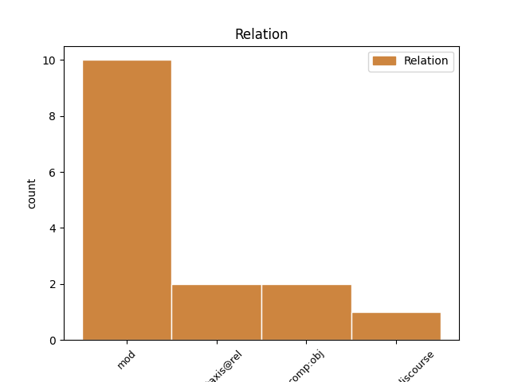
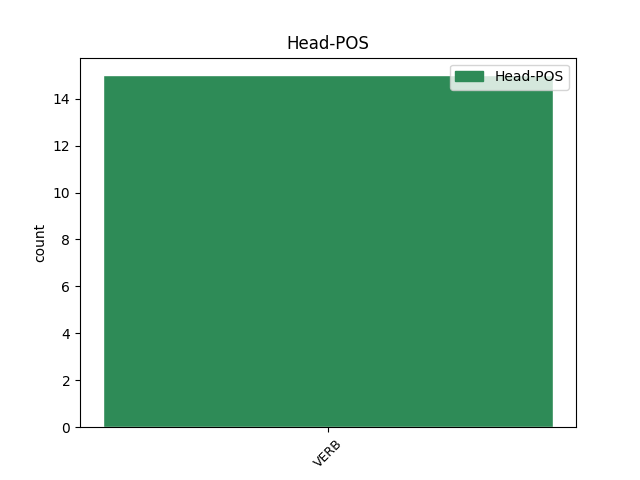
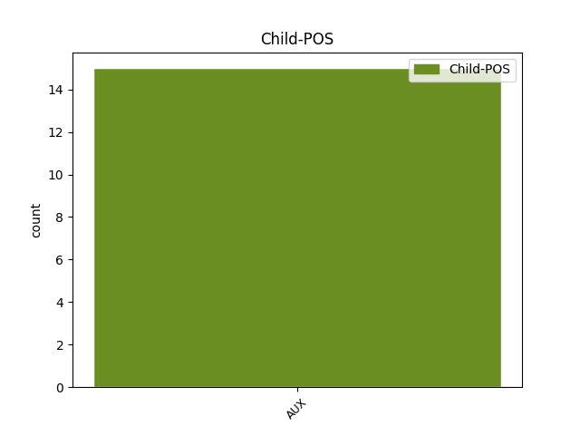

Distribution of features within this leaf



Agreement Rules sorted by frequency.
- When the dependent token is the modifer(mod) of the head token, and the dependent token is AUX.
1 Коли _ _ _ _ 0 _ _ _
2 долар _ _ _ _ 0 _ _ _
3 був бути AUX Vapis-sm Aspect=Imp|Gender=Masc|Mood=Ind|Number=Sing|Tense=Past|VerbForm=Fin 8 mod _ Id=233e|LTranslit=buty|Translit=buv
4 по _ _ _ _ 0 _ _ _
5 8 _ _ _ _ 0 _ _ _
6 гривень _ _ _ _ 0 _ _ _
7 , _ _ _ _ 0 _ _ _
8 стоїла стоїти VERB Vmpis-sf Aspect=Imp|Gender=Fem|Mood=Ind|Number=Sing|Tense=Past|VerbForm=Fin 0 _ _ _
9 ця _ _ _ _ 0 _ _ _
10 техніка _ _ _ _ 0 _ _ _
11 4 _ _ _ _ 0 _ _ _
12 , _ _ _ _ 0 _ _ _
13 5 _ _ _ _ 0 _ _ _
14 тисячі _ _ _ _ 0 _ _ _
15 гривень _ _ _ _ 0 _ _ _
16 . _ _ _ _ 0 _ _ _
1 Коли _ _ _ _ 0 _ _ _
2 наша _ _ _ _ 0 _ _ _
3 команда _ _ _ _ 0 _ _ _
4 брала _ _ _ _ 0 _ _ _
5 участь _ _ _ _ 0 _ _ _
6 у _ _ _ _ 0 _ _ _
7 згаданому _ _ _ _ 0 _ _ _
8 вище _ _ _ _ 0 _ _ _
9 змаганні _ _ _ _ 0 _ _ _
10 Kaggle _ _ _ _ 0 _ _ _
11 , _ _ _ _ 0 _ _ _
12 ми _ _ _ _ 0 _ _ _
13 використовували використовувати VERB Vmpis-p Aspect=Imp|Mood=Ind|Number=Plur|Tense=Past|VerbForm=Fin 0 _ _ _
14 орендований _ _ _ _ 0 _ _ _
15 на _ _ _ _ 0 _ _ _
16 Amazon _ _ _ _ 0 _ _ _
17 ресурс _ _ _ _ 0 _ _ _
18 із _ _ _ _ 0 _ _ _
19 128 _ _ _ _ 0 _ _ _
20 процесорів _ _ _ _ 0 _ _ _
21 та _ _ _ _ 0 _ _ _
22 2 _ _ _ _ 0 _ _ _
23 Tb _ _ _ _ 0 _ _ _
24 оперативної _ _ _ _ 0 _ _ _
25 пам’яті _ _ _ _ 0 _ _ _
26 ( _ _ _ _ 0 _ _ _
27 x1.32xlarge _ _ _ _ 0 _ _ _
28 Amazon _ _ _ _ 0 _ _ _
29 EC2 _ _ _ _ 0 _ _ _
30 ) _ _ _ _ 0 _ _ _
31 , _ _ _ _ 0 _ _ _
32 що _ _ _ _ 0 _ _ _
33 було бути AUX Vapis-sn Aspect=Imp|Gender=Neut|Mood=Ind|Number=Sing|Tense=Past|VerbForm=Fin 13 parataxis@rel _ Id=1ope|LTranslit=buty|Translit=bulo
34 одним _ _ _ _ 0 _ _ _
35 із _ _ _ _ 0 _ _ _
36 важливих _ _ _ _ 0 _ _ _
37 чинників _ _ _ _ 0 _ _ _
38 нашої _ _ _ _ 0 _ _ _
39 перемоги _ _ _ _ 0 _ _ _
40 на _ _ _ _ 0 _ _ _
41 змаганні _ _ _ _ 0 _ _ _
42 , _ _ _ _ 0 _ _ _
43 оскільки _ _ _ _ 0 _ _ _
44 дало _ _ _ _ 0 _ _ _
45 можливість _ _ _ _ 0 _ _ _
46 нам _ _ _ _ 0 _ _ _
47 випробувати _ _ _ _ 0 _ _ _
48 велику _ _ _ _ 0 _ _ _
49 кількість _ _ _ _ 0 _ _ _
50 моделей _ _ _ _ 0 _ _ _
51 з _ _ _ _ 0 _ _ _
52 великим _ _ _ _ 0 _ _ _
53 набором _ _ _ _ 0 _ _ _
54 створених _ _ _ _ 0 _ _ _
55 ознак _ _ _ _ 0 _ _ _
56 . _ _ _ _ 0 _ _ _
1 Візьмеш _ _ _ _ 0 _ _ _
2 мене _ _ _ _ 0 _ _ _
3 й _ _ _ _ 0 _ _ _
4 побачиш побачити VERB Vmeif2s Aspect=Perf|Mood=Ind|Number=Sing|Person=2|Tense=Fut|VerbForm=Fin 0 _ _ _
5 , _ _ _ _ 0 _ _ _
6 як _ _ _ _ 0 _ _ _
7 добре _ _ _ _ 0 _ _ _
8 тобі _ _ _ _ 0 _ _ _
9 буде бути AUX Vapif3s Aspect=Imp|Mood=Ind|Number=Sing|Person=3|Tense=Fut|VerbForm=Fin 4 comp:obj _ Id=0hmb|LTranslit=buty|SpaceAfter=No|Translit=bude
10 . _ _ _ _ 0 _ _ _
1 Писав писати VERB Vmpis-sm Aspect=Imp|Gender=Masc|Mood=Ind|Number=Sing|Tense=Past|VerbForm=Fin 0 _ _ _
2 сонети _ _ _ _ 0 _ _ _
3 про _ _ _ _ 0 _ _ _
4 війну _ _ _ _ 0 _ _ _
5 , _ _ _ _ 0 _ _ _
6 як _ _ _ _ 0 _ _ _
7 було бути AUX Vapis-sn Aspect=Imp|Gender=Neut|Mood=Ind|Number=Sing|Tense=Past|VerbForm=Fin 1 parataxis@discourse _ Id=0qil|LTranslit=buty|Translit=bulo
8 вже _ _ _ _ 0 _ _ _
9 казано _ _ _ _ 0 _ _ _
10 , _ _ _ _ 0 _ _ _
11 і _ _ _ _ 0 _ _ _
12 про _ _ _ _ 0 _ _ _
13 « _ _ _ _ 0 _ _ _
14 святий _ _ _ _ 0 _ _ _
15 ідеал _ _ _ _ 0 _ _ _
16 » _ _ _ _ 0 _ _ _
17 . _ _ _ _ 0 _ _ _
Disagree Examples:
1 Шановне _ _ _ _ 0 _ _ _
2 видавництво _ _ _ _ 0 _ _ _
3 , _ _ _ _ 0 _ _ _
4 людина _ _ _ _ 0 _ _ _
5 явно _ _ _ _ 0 _ _ _
6 просто _ _ _ _ 0 _ _ _
7 переймалася перейматися VERB Vmpis-sf Aspect=Imp|Gender=Fem|Mood=Ind|Number=Sing|Tense=Past|VerbForm=Fin 0 _ _ _
8 чи _ _ _ _ 0 _ _ _
9 не _ _ _ _ 0 _ _ _
10 є бути AUX Vapip3s Aspect=Imp|Mood=Ind|Number=Sing|Person=3|Tense=Pres|VerbForm=Fin 7 comp:obj _ Id=1t4r|LTranslit=buty|Translit=ě
11 це _ _ _ _ 0 _ _ _
12 зміщення _ _ _ _ 0 _ _ _
13 чимось _ _ _ _ 0 _ _ _
14 на _ _ _ _ 0 _ _ _
15 зразок _ _ _ _ 0 _ _ _
16 темного _ _ _ _ 0 _ _ _
17 логотипу _ _ _ _ 0 _ _ _
18 на _ _ _ _ 0 _ _ _
19 ваших _ _ _ _ 0 _ _ _
20 класичних _ _ _ _ 0 _ _ _
21 виданнях _ _ _ _ 0 _ _ _
22 " _ _ _ _ 0 _ _ _
23 Гаррі _ _ _ _ 0 _ _ _
24 Поттера _ _ _ _ 0 _ _ _
25 " _ _ _ _ 0 _ _ _
26 , _ _ _ _ 0 _ _ _
27 яке _ _ _ _ 0 _ _ _
28 означало _ _ _ _ 0 _ _ _
29 свого _ _ _ _ 0 _ _ _
30 часу _ _ _ _ 0 _ _ _
31 підробку _ _ _ _ 0 _ _ _
32 книги _ _ _ _ 0 _ _ _
33 ( _ _ _ _ 0 _ _ _
34 пам'ятаю _ _ _ _ 0 _ _ _
35 в _ _ _ _ 0 _ _ _
36 якомусь _ _ _ _ 0 _ _ _
37 виданні _ _ _ _ 0 _ _ _
38 " _ _ _ _ 0 _ _ _
39 Поттера _ _ _ _ 0 _ _ _
40 " _ _ _ _ 0 _ _ _
41 про _ _ _ _ 0 _ _ _
42 це _ _ _ _ 0 _ _ _
43 згадувалося _ _ _ _ 0 _ _ _
44 в _ _ _ _ 0 _ _ _
45 кінці _ _ _ _ 0 _ _ _
46 книги _ _ _ _ 0 _ _ _
47 ) _ _ _ _ 0 _ _ _
48 . _ _ _ _ 0 _ _ _